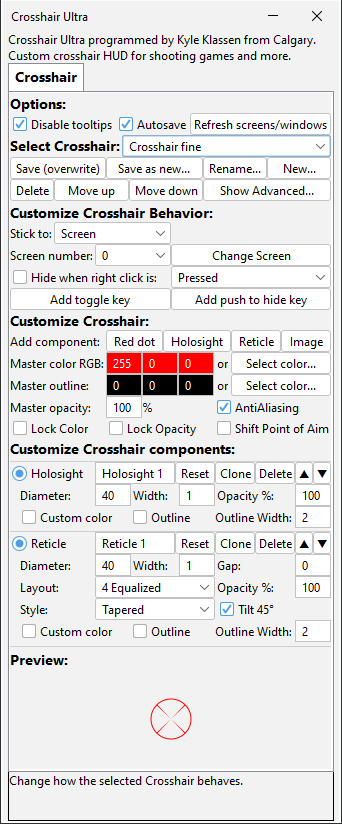

|
KYLE KLASSEN SOFTWARE |
||||
| HOME | CROSSHAIR | SCREEN | contribute | |
|
Crosshair Ultra on Steam↗: https://store.steampowered.com/app/4956760/Crosshair_Ultra/ Crosshair Ultra is a utility for shooting games which draws a supremely customizable crosshair on your screen or game window for improved hip fire accuracy and more rapid target acquisition. Crosshair Ultra is the most customizable crosshair utility on Steam.
 |
||||
Copyright Kyle Klassen 2026